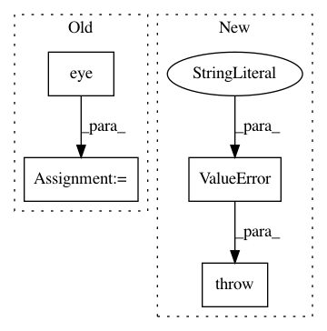

0e55033c44194d50ae4829818ac2ece86912ad10,pymc3/distributions/multivariate.py,,get_tau_cov,#Any#Any#Any#,28
Before Change
if tau is None:
if cov is None:
cov = np.eye(len(mu))
tau = np.eye(len(mu))
else:
tau = tt.nlinalg.matrix_inverse(cov)
After Change
if tau is None:
if cov is None:
raise ValueError("Incompatible parameterization. Either use tau"
"or cov to specify distribution.")
else:
tau = tt.nlinalg.matrix_inverse(cov)
else:
In pattern: SUPERPATTERN
Frequency: 3
Non-data size: 4
Instances
Project Name: pymc-devs/pymc3
Commit Name: 0e55033c44194d50ae4829818ac2ece86912ad10
Time: 2017-03-03
Author: fonnesbeck@gmail.com
File Name: pymc3/distributions/multivariate.py
Class Name:
Method Name: get_tau_cov
Project Name: nipy/dipy
Commit Name: 2b449e05aa5e01623c39d43132c756b0e514f091
Time: 2013-12-23
Author: mrbago@gmail.com
File Name: dipy/tracking/_utils.py
Class Name:
Method Name: _mapping_to_voxel
Project Name: stellargraph/stellargraph
Commit Name: ce597a0b10658043b6d6d8ffed3fff4a6ebbc1ea
Time: 2019-09-26
Author: u5824685@anu.edu.au
File Name: stellargraph/layer/ppnp.py
Class Name: PPNP
Method Name: __init__